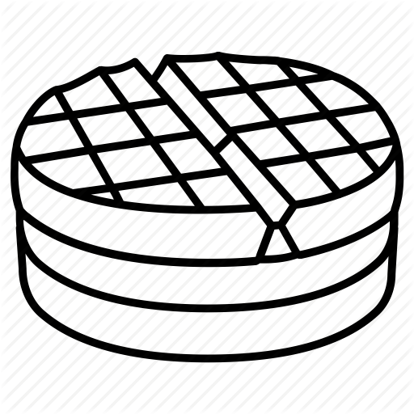
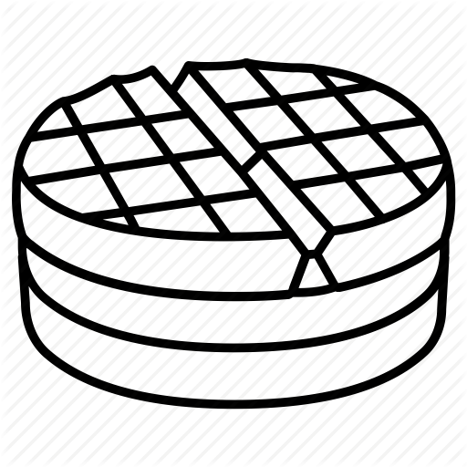

Circle K International is the largest student-led collegiate service organization in the world.
While encompassing all three tenets of Service, Fellowship, and Leadership - we are student leaders
that work together to serve the community while making memorable bonds.
We support the Pediatric Trauma Program, Feeding America, and the Kiwanis Family House through various
fundraisers that allow us to donate to these charities and help at a larger scale.
Upcoming Events
Big and Little Social #3
Feeding America
Adopt-A-Street
K-Rock Sports Day
Announcements
Come out to our 3rd Big and Little Social today at Glen Mor Scotties!
Adopt-A-Street is happening this Saturday, followed by K-Rock Sports Day! Clean up Riverside and then hang out
with your friends afterwards!


 
